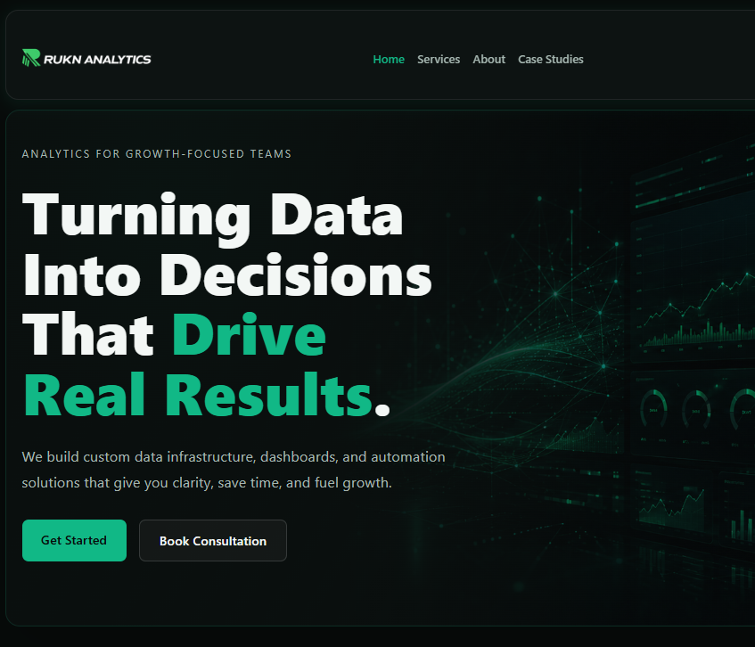

Production Website
Rukn Analytics Website
Role: Founder & Developer
Stack: HTML • CSS • JS • GitHub Pages
Designed and developed a responsive analytics consulting website integrating scheduling, lead generation, professional branding, and service workflows.